日常の中に、静かな時間を。
光と余白
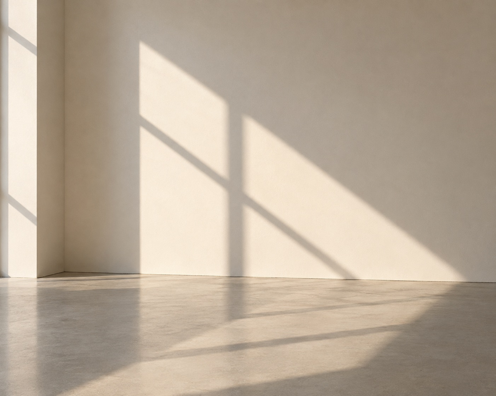
10.18SAT–12.14SUN
○○現代美術館
ごあいさつ
光の中に、
余白を見つける。
窓から差し込む光が、壁の上をゆっくりと移ろっていく。私たちは毎日その光を目にしながら、立ち止まって見つめることはほとんどありません。
本展では、光・影・空間をテーマに制作を続ける3名の作家の作品を通して、何もない場所＝「余白」が持つ豊かさをたどります。
情報にあふれた日々の中で、少しだけ、静かな時間を過ごしてみませんか。
○○現代美術館
一部の作品は撮影OKです
キャプションに「撮影OK」とある
写真に残して
SNSへの
動きのある作品
揺れる光は、
フラッシュ・
おすすめの順路は
スクロールで、
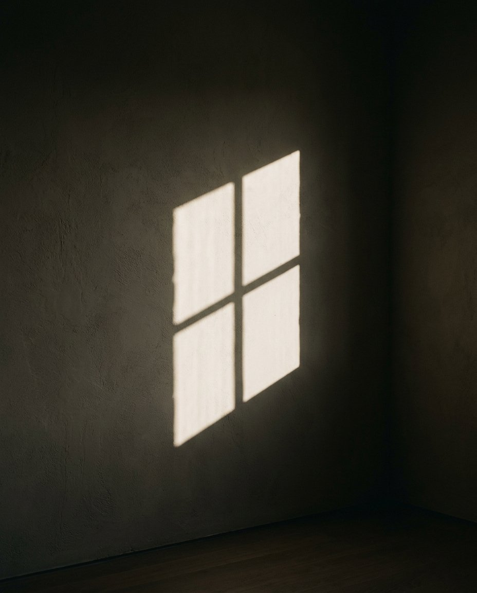
「余白」が
生み出すもの
Chapter 1
余白は、何もない場所ではありません。
光が届き、空気が流れ、
見る人の思いが入りこむための場所です。
-
光
形を持たない光は、壁や床に触れてはじめて姿を現します。余白があるからこそ、光は見えるのです。
-
空
作品と作品のあいだの距離も、展示の一部です。歩く速さや立ち止まる場所で、見え方が変わります。
-
静
音や情報を少しだけ減らすと、自分の感覚が戻ってくる。静けさは、感じるための余白です。
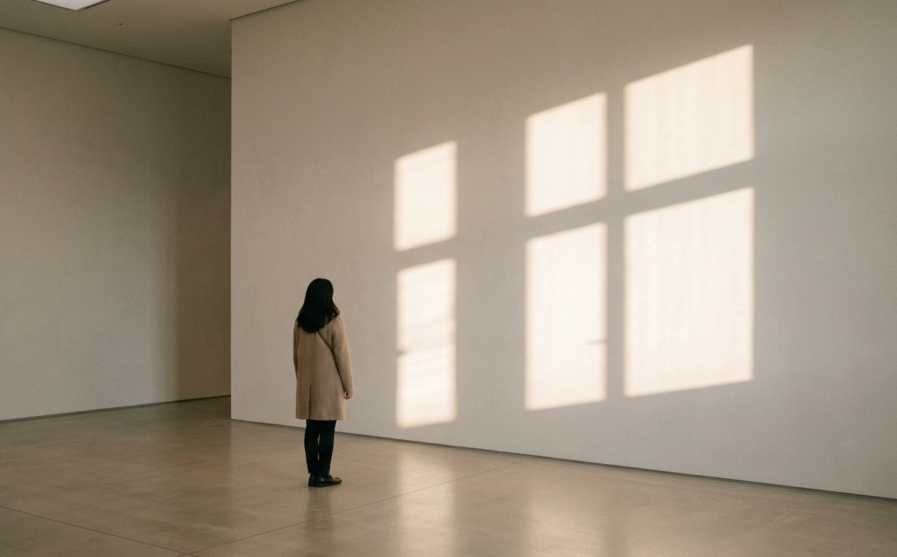
Gallery
光を見る
午前と午後で、展示室に差し込む光は姿を変えます。同じ作品でも、訪れる時間によって違う表情に出会えます。
Room 01
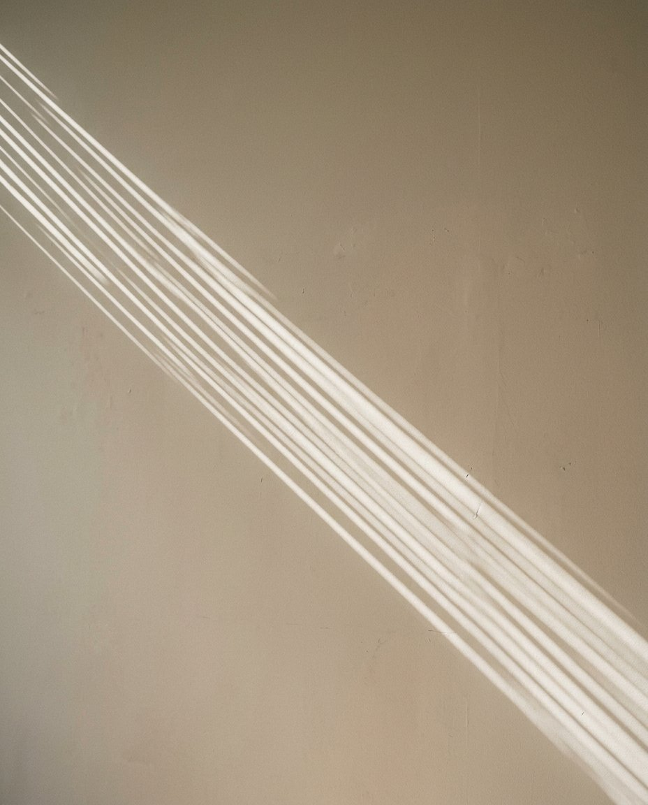
午後三時の線
白石 透 Toru Shiraishi
撮影OK
ブラインド越しの光を、時間の「目盛り」として捉えたインスタレーション。見る時間によって線の角度が少しずつ変わります。
Best time14:00 – 15:30
Room 02
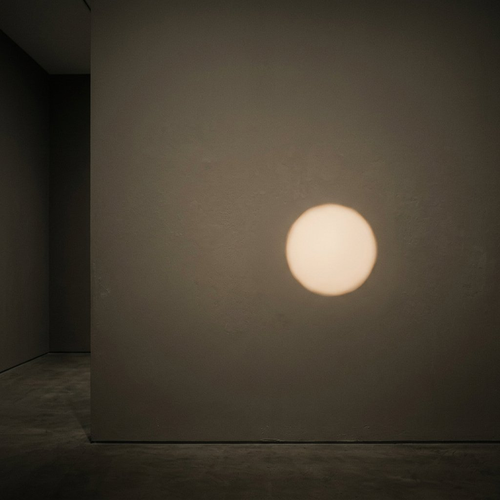
満ちる
早瀬 灯 Akari Hayase
撮影OK(フラッシュ不可)
暗がりに一つだけ浮かぶ円い光。何もない壁が、光ひとつで「場所」に変わる瞬間を描きます。
Note暗室のため、目が慣れるまで少しお待ちください
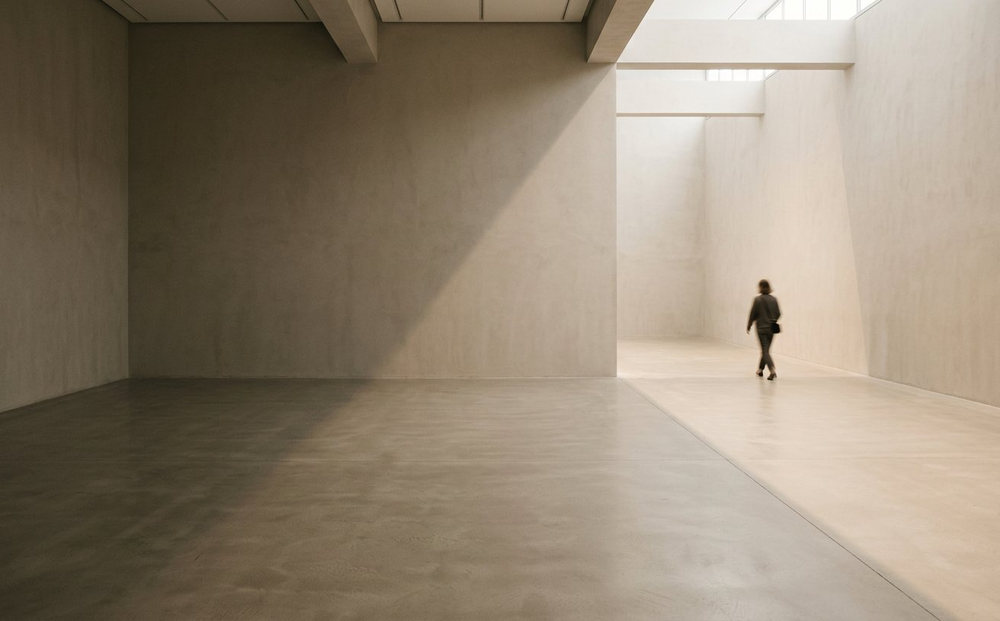
Corridor
空間を歩く
おすすめの順路はありますが、寄り道も歓迎です。気になった光のほうへ、ゆっくり歩いてみてください。
Room 03
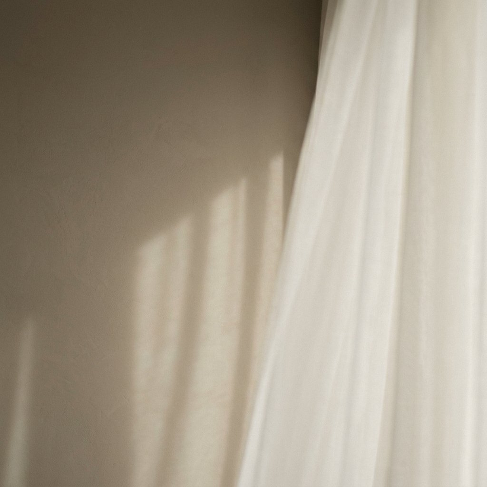
風のあと
早瀬 灯 Akari Hayase
撮影不可(ご鑑賞のみ)
薄い布を透過した光のゆらぎを記録した映像作品。風が止んだあとの、わずかな揺れに目を向けます。
Note映像は12分。展示室のベンチから、最後までゆっくりご覧いただけます
Room 04
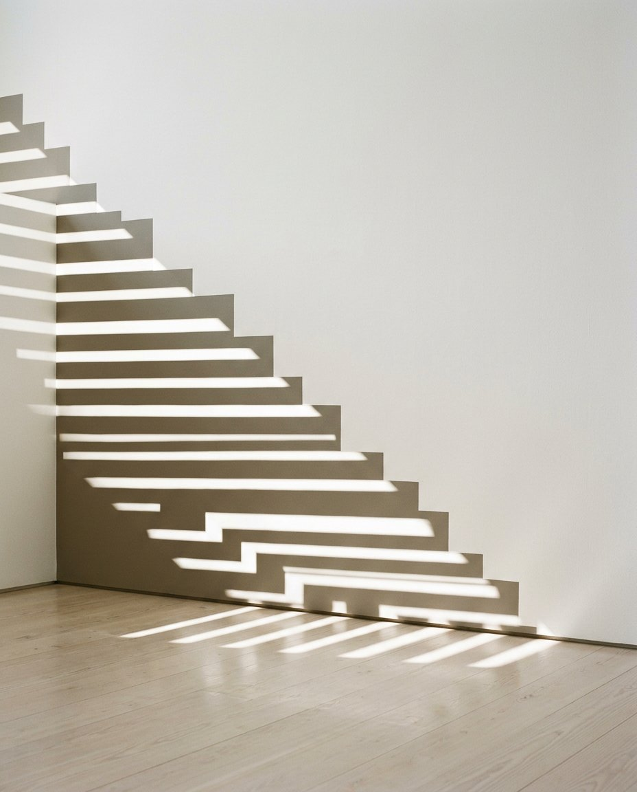
のぼる影
真柴 澄 Sumi Mashiba
撮影OK
展示室の床から壁へと続く影の段差。歩く位置によって、影と自分の関係が変化していきます。
Best time16:00 – 17:00
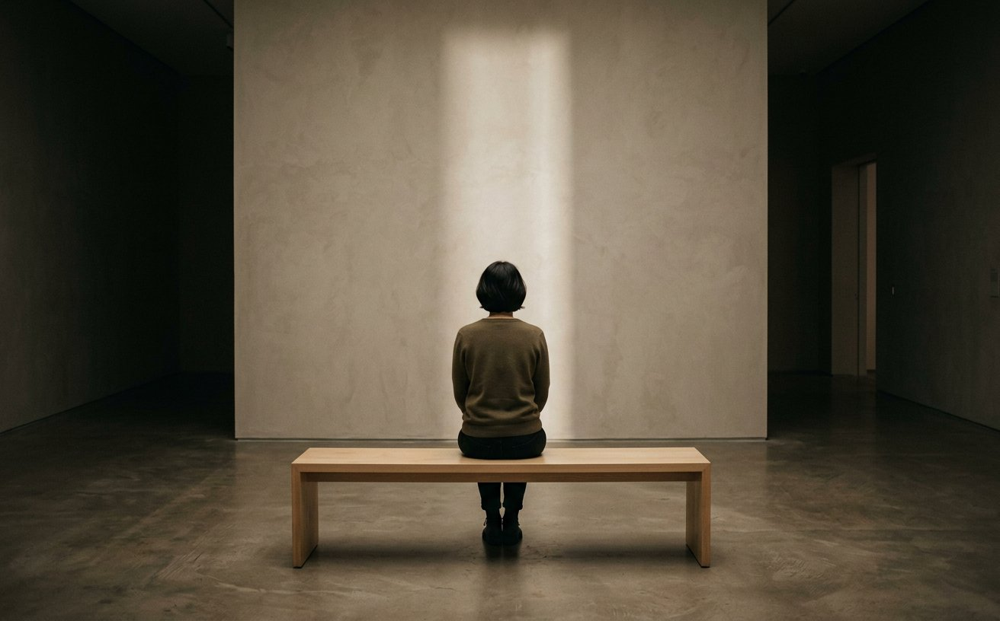
ここで、
少し座りませんか。
展示室の各所にベンチがあります。
光が動くのを、ただ待つ時間も本展の一部です。
Artists
作家のことば
-
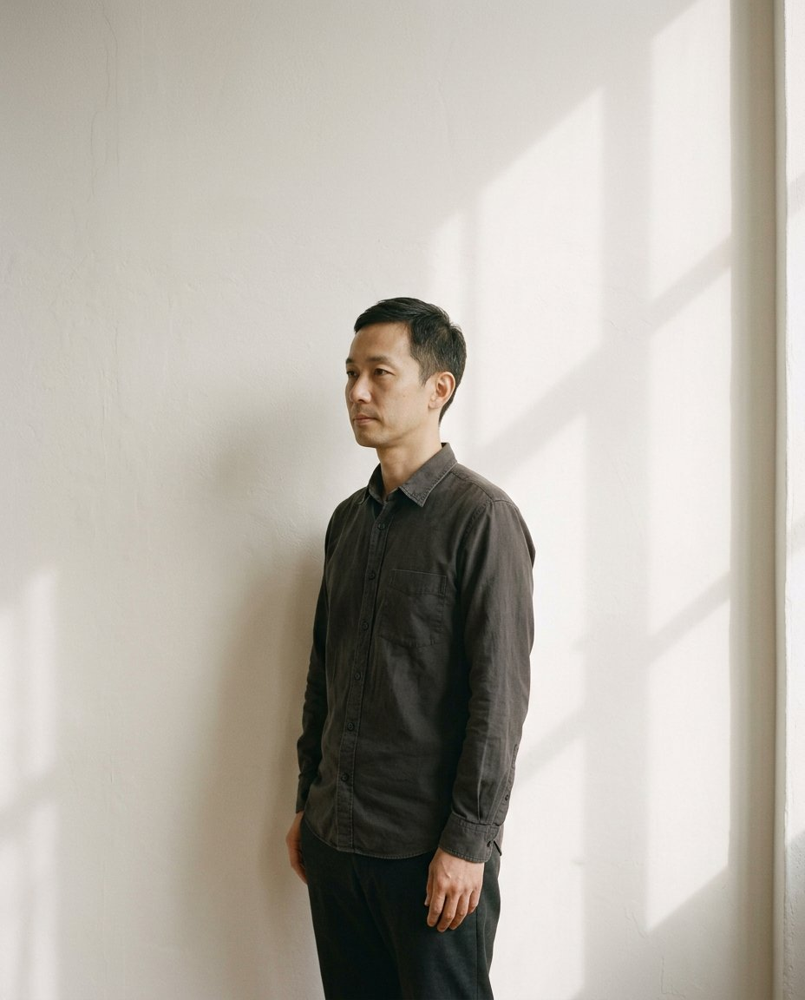
光は、時計よりも正確に
時間を教えてくれる。Toru Shiraishi
白石 透
1985年生まれ。建築設計事務所を経て美術作家に。日常の光を「時間の痕跡」として扱うインスタレーションを中心に発表している。
-
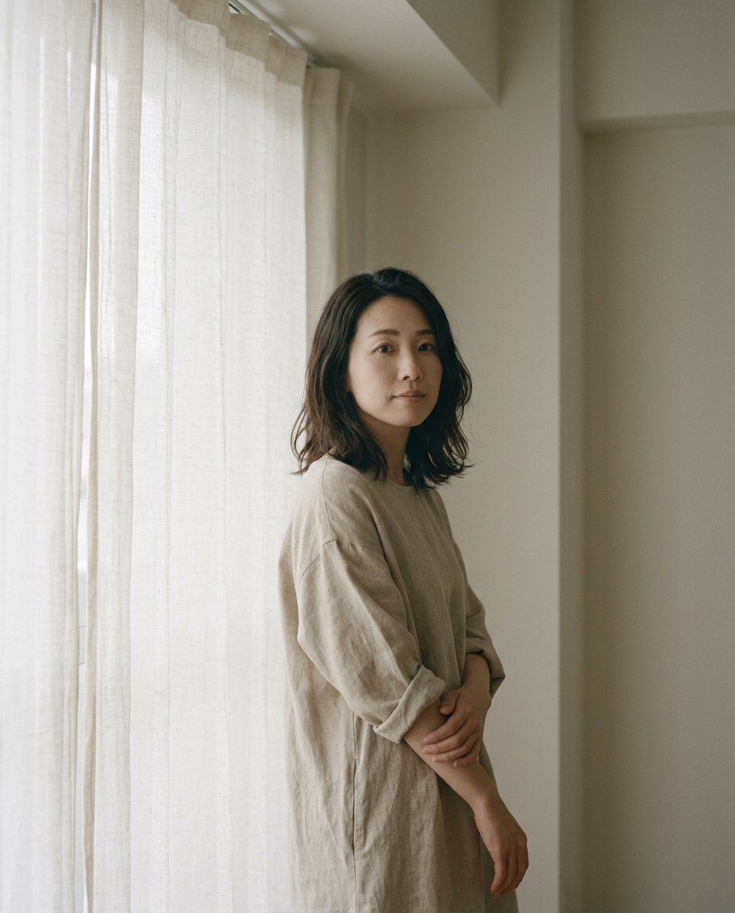
暗さがあるから、
光は「ここ」になる。Akari Hayase
早瀬 灯
1990年生まれ。映像と照明を用い、光と布、光と空気の関係を探る。国内外の芸術祭に多数参加。
-
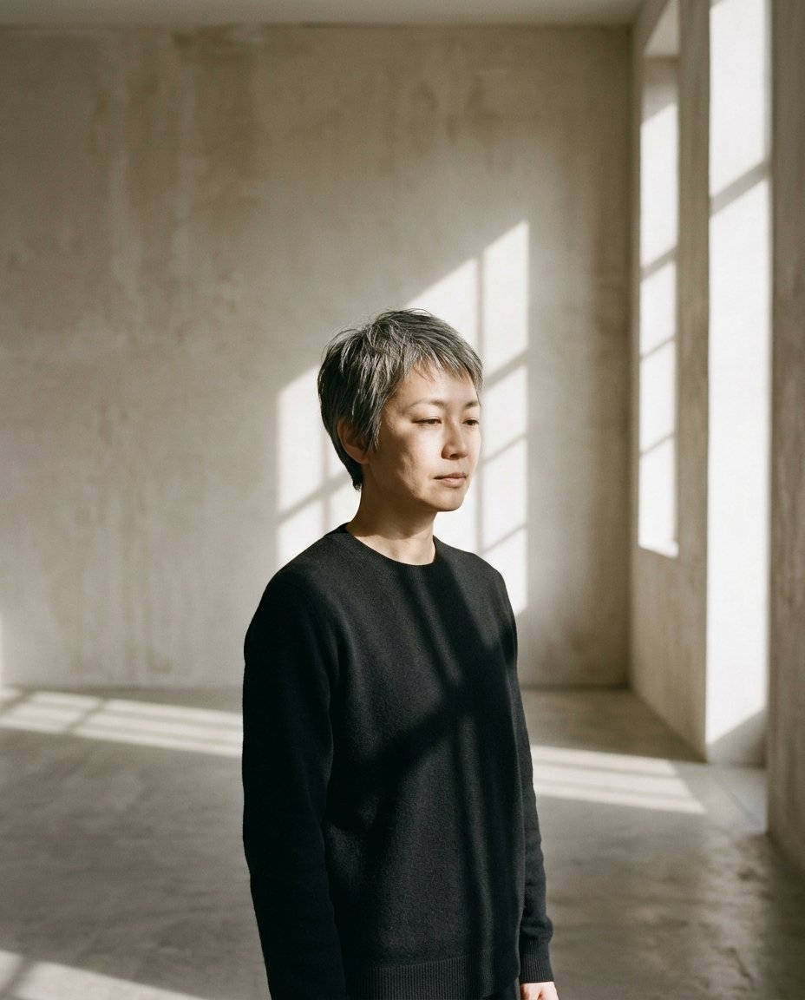
影の中に立つと、
自分の輪郭がわかる。Sumi Mashiba
真柴 澄
1982年生まれ。影と身体の関係をテーマに、展示空間そのものを作品化する。本展では新作を発表。
写真の中で、
光は止まっています。
本当の展示室では、
光はいまも少しずつ動いています。
その移ろいは、
その場所に立った人にしか見えません。
Information
ご来館案内
光がうつくしい時間
- 10:00 – 12:00白くやわらかな朝の光。比較的空いています
- 14:00 – 15:30《午後三時の線》がいちばん長く伸びる時間
- 金・土 17:00 –夜間開館。夕暮れから夜へ、光の色が変わります
- Period会期
-
10.18SAT – 12.14SUN
休館日：月曜日(祝日の場合は翌平日)
- Hours開館時間
-
10:00 – 18:00
金・土曜日は 20:00 まで※入館は閉館の30分前まで
- Venue会場
○○現代美術館 2F 企画展示室
- Admission入場料
-
一般 1,600円 大学生・専門学校生 1,000円 高校生 600円 中学生以下 無料 ※オンラインチケットは各200円引き
※障がい者手帳をお持ちの方と付添1名は無料 - Photo撮影
-
一部の作品を除き、撮影いただけます(静止画のみ)
※《風のあと》(Room 03)は撮影できません
※フラッシュ・三脚・自撮り棒のご使用、動画撮影はご遠慮ください
※投稿の際は「#光と余白展」をつけていただけるとうれしいです - Accessアクセス
-
○○線「○○駅」東口より徒歩5分
△△線「△△駅」2番出口より徒歩8分※駐車場はございません。公共交通機関をご利用ください。